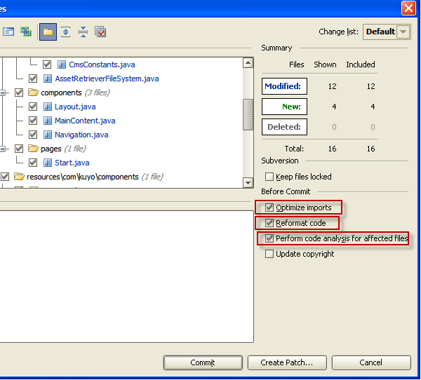
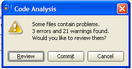
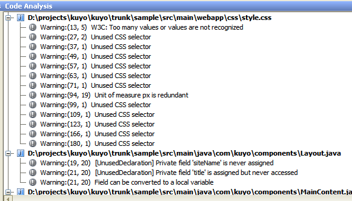

As software engineers we get overwhelmed by the masses of bad-quality source code we work with each day. At this stage improvement of all these source code artifacts is a never ending story. To tackle this problem IntelliJ IDE goes the step-by-step improvement approach, where it runs actions and includes its powerfull code inspections on your changes you are about to propagate to source control repository.
Code quality issue
Code gets written and as it changes (in most cases) it rottens also. In many projects/products changing and adding functionality means having a larger codebase. And the bigger it gets the more difficult it becomes to improve the overall code quality picture:
- Motivation of developers decreases to keep code clean. In the end code gets worse and worse, just have a look
at the ‘Broken windows’ chapter of ‘The Pragmatic Programmer’ for details - Efforts to clean up increases, more code needs to be maintained. Even if we are highly motivated to write ‘good’ code, it is often difficult to know where to start.
Solution: Improve what you change
There are two ways to tackle the problem: Big Bang or continous code improval. With BigBang you dedicate armies of developers who touch code just for the sake of making the code ‘better’. This approach has its drawbacks: You still don’t know where to start, it is difficult to sell to the product owners (feature stop) and further more it gets really boring (ever tried to tidy up your flat for a whole week without doing anything else?). An approach which worked better for team members and me was to introduce a kind of continous code improvement. It is important not to say that we get from 10000 warnings to 0, but to make a commitment that the warnings never ever get higher and must decrease after constantly. Here you improve your code quality in parallel to feature development and you only improve what you change. This much better sells to the product owner, you even don’t need to mention it, because it is part of your daily effort and should be transparent for non-techies.
Furhter more incremental work-items can be managed better and focusing on certain artifacts also reduces overall efforts. In my view the best “quality-gate” for such an improve-what-you-change workflow is the source control commit or checkin phase. You changed code and now you want to ensure that checked-in sources provide a certain code-quality level.
Source control dialog IntelliJ:

IntelliJ approach to continous code quality improvement
The real problem is the tooling support: Humans are very bad at automating repeatable tasks. For instance when I am using Eclipse IDE and commiting sources to for instance Subversion, I often forget to reformat source code, remove unused imports or am just overlooking bad code snippets. IntelliJ (tested on version 8.1) goes a much better way: It provides actions (auto-formatting, auto-importing) while commiting and besides that can run static code analysis. For this code analysis it includes the so called ‘Inspections’, which are numerous and sensible (). For some cases it even provides an automated correction of the code flaw and the corresponding code snippet (pressing Alt+Enter). All these actions and checks are performed for the items you are about to commit only. This way IntelliJ mandates the successful approach to improve what you change or touch.
Dialog to review inspections and inspection results after pressing ‘Review button’ :



0 responses
You must log in to post a comment.